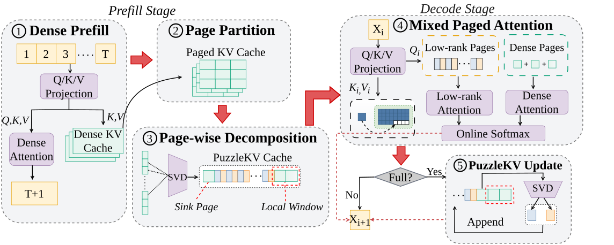

Why it matters왜 중요한가
Low-rank KV compression has been quietly losing to eviction and quantization, and this paper offers a clean diagnosis of why: the basis was always too wide.
저랭크 KV 압축은 그동안 조용히 eviction과 quantization에 밀려 왔다. 이 논문은 그 이유를 깔끔하게 진단한다 — 기저(basis)를 잡는 범위가 늘 너무 넓었다는 것.
A Qwen3-32B request at 128K tokens holds roughly 32 GiB of KV cache in BF16, and that footprint scales linearly with both context and batch size. Low-rank methods are the attractive answer because, unlike eviction, they keep every token — just in fewer dimensions. But they have all made the same structural choice: derive one projection space (from weights, from a calibration set, or from the prompt at inference) and apply it across a broad region. A single basis optimizes for the directions that dominate overall reconstruction, which means whatever is rare gets treated as noise. The failure is spectacular rather than gradual: on NIAH-S1, which hides one unique key–value pair inside a highly repetitive haystack, a global-basis SVD scores 0.00 on Llama-3.1 while Full KV scores 100.00. The repeated background wins the reconstruction objective, and the needle is exactly what gets truncated away.
Qwen3-32B가 128K 토큰을 처리하면 BF16 기준 KV 캐시만 약 32 GiB다. 이 용량은 컨텍스트 길이와 배치 크기 양쪽에 선형으로 커진다. 저랭크 방식이 매력적인 이유는 eviction과 달리 모든 토큰을 — 단지 더 낮은 차원으로 — 남기기 때문이다. 그런데 기존 방식들은 하나같이 같은 구조적 선택을 했다. 투영 공간을 하나 구해(가중치에서든, 캘리브레이션 데이터에서든, 추론 시점 프롬프트에서든) 넓은 영역에 일괄 적용하는 것. 단일 기저는 전체 재구성 오차를 지배하는 방향에 최적화되고, 그 결과 드문 정보는 노이즈 취급을 받는다. 실패는 완만하지 않고 극적이다. 반복적인 건초더미 속에 고유한 키–값 쌍 하나를 숨겨 둔 NIAH-S1에서, 전역 기저 SVD는 Llama-3.1 기준 0.00점을 받는다(Full KV는 100.00). 반복되는 배경이 재구성 목적함수를 이기고, 하필 찾아야 할 바늘이 잘려 나간다.
PuzzleKV's move is to shrink the region until this cannot happen. If the basis only has to explain 32 consecutive tokens, then within that window the needle is no longer a rare direction — it is a substantial fraction of the local signal. The choice of 32 is not arbitrary either: it is already the page size that PagedAttention and vLLM use to manage cache memory, so one abstraction now governs representation, memory management, and GPU batching at the same time.
PuzzleKV의 수는 그런 일이 일어날 수 없을 만큼 영역을 좁히는 것이다. 기저가 연속된 32개 토큰만 설명하면 되는 순간, 그 창 안에서 바늘은 더 이상 희귀 방향이 아니다 — 국소 신호의 상당한 비중을 차지한다. 32라는 숫자도 임의가 아니다. PagedAttention과 vLLM이 이미 캐시 메모리를 관리하는 단위로 쓰는 페이지 크기이며, 덕분에 표현·메모리 관리·GPU 배치가 하나의 추상으로 동시에 다뤄진다.

By the numbers핵심 숫자
The main result핵심 결과
| Method | Llama3.1 16K | Llama3.1 32K | Qwen3 16K | Qwen3 32K |
|---|---|---|---|---|
| Full KV (uncompressed)(비압축) | 92.33 | 87.54 | 91.41 | 89.44 |
| Global SVD | 62.61 | 59.38 | 76.51 | 71.89 |
| Palu (G-LRD) | 87.26 | 82.68 | 79.02 | 71.03 |
| H2O | 68.76 | 61.75 | 64.00 | 62.95 |
| PuzzleKV | 88.82 | 84.39 | 90.73 | 87.53 |
PuzzleKV is the top compressed method in all four settings, but read the columns rather than the bold: against Palu it wins by 11.71 and 16.50 points on Qwen3 and loses to it in raw retrieval on Llama-3.1 by 1.56 and 1.71 — the real, consistent gap is against Global SVD and H2O. Note also how badly the baselines transfer across model families: Palu collapses from 87.26 on Llama-3.1 to 79.02 on Qwen3, while PuzzleKV moves in the opposite direction. Being calibration-free is doing visible work here.
PuzzleKV는 네 설정 모두에서 압축 기법 중 1위지만, 굵은 글씨보다 열을 읽는 편이 낫다. Palu 대비로는 Qwen3에서 11.71·16.50점 앞서지만 Llama-3.1에서는 1.56·1.71점 뒤진다 — 일관되게 벌어지는 진짜 격차는 Global SVD와 H2O 상대다. 그리고 베이스라인들이 모델 계열을 건너갈 때 얼마나 무너지는지도 봐야 한다. Palu는 Llama-3.1의 87.26에서 Qwen3의 79.02로 내려앉는데, PuzzleKV는 반대 방향으로 움직인다. 캘리브레이션이 필요 없다는 성질이 여기서 눈에 보이게 일한다.
The two ideas that carry the paper이 논문을 떠받치는 두 아이디어
The page is a local subspace
A basis spanning the whole prompt maximizes reuse but must serve regions with completely different dominant directions. Give each 32-token page its own compact basis and every region is described by the directions that actually matter to it. The authors verify the premise before using it: across layers, KV heads, and page sizes in both models, the rank needed for 80% reconstruction stays well below the full page rank. The payoff shows up exactly where a global basis dies — Variable Tracking, which needs a five-variable four-hop chain recovered among distractors, goes from 0.04 (Global SVD) to 98.80 (PuzzleKV) on Llama-3.1 at 16K.
프롬프트 전체를 덮는 기저는 재사용성은 최대지만, 지배적 방향이 완전히 다른 영역들을 한꺼번에 감당해야 한다. 32토큰짜리 페이지마다 자기 기저를 주면 각 영역은 자기에게 실제로 중요한 방향들로 기술된다. 저자들은 이 전제를 먼저 검증한다 — 두 모델의 레이어·KV 헤드·페이지 크기 전반에서, 재구성 정확도 80%에 필요한 랭크는 페이지 풀랭크보다 확실히 낮게 유지된다. 효과는 전역 기저가 죽는 바로 그 지점에서 드러난다. 방해자들 사이에서 5변수 4홉 연쇄를 복원해야 하는 Variable Tracking은 Llama-3.1 16K에서 0.04(Global SVD) → 98.80(PuzzleKV)으로 뛴다.
Never reconstruct, never stall
Two engineering choices keep the idea from being ruinously expensive. First, decomposition: pages are short and wide (P < d), so instead of running an SVD per P×d page, PuzzleKV eigendecomposes the smaller P×P Gram matrix XXᵀ — mathematically the same truncated-SVD factors, but a uniform batched GPU op across all pages. Second, attention: for a factorized page K̂ = LR, the query is contracted with the small factors first, so the dense page is never materialized. Page-local softmax states are then merged by FlashAttention's online-softmax reduction. The result is that decoding costs 0.075 ms/token more than an uncompressed paged cache, and the entire overhead lands in prefill.
두 가지 엔지니어링 선택이 이 아이디어가 파산하지 않게 붙든다. 첫째, 분해: 페이지는 짧고 넓으므로(P < d) P×d 페이지마다 SVD를 돌리는 대신 더 작은 P×P Gram 행렬 XXᵀ를 고유분해한다 — 수학적으로는 동일한 truncated-SVD 인자지만, 모든 페이지에 걸쳐 균일한 배치 GPU 연산이 된다. 둘째, 어텐션: 분해된 페이지 K̂ = LR에 대해 쿼리를 작은 인자들과 먼저 축약하므로 dense 페이지가 실체화되는 일이 없다. 그렇게 얻은 페이지별 softmax 상태를 FlashAttention의 online-softmax 리덕션으로 병합한다. 그 결과 디코딩 비용은 비압축 페이지 캐시보다 토큰당 0.075 ms 더 들 뿐이고, 오버헤드는 전부 prefill에 떨어진다.
How it works어떻게 작동하나
- Prefill dense, then partition. Dense로 prefill한 뒤 분할한다. The standard KV cache is computed normally, then split per layer and per KV head into fixed pages of P = 32 tokens. Nothing about the forward pass changes.평범하게 KV 캐시를 계산한 다음, 레이어별·KV 헤드별로 P = 32 토큰짜리 고정 페이지로 자른다. 순전파 자체는 전혀 건드리지 않는다.
- Factorize every completed page — except two regions. 완성된 페이지를 전부 분해한다 — 두 영역만 빼고. Each eligible page becomes L·R via truncated SVD at rank rK=16 for keys and rV=14 for values. The first page (attention sinks, which absorb disproportionate attention) and a sliding window of the most recent pages stay dense. Storage per factorized page pair is (rK+rV)(P+d) / 2Pd ≈ 0.586 at d = 128.자격이 된 페이지는 키 랭크 rK=16, 값 랭크 rV=14의 truncated SVD로 L·R이 된다. 첫 페이지(어텐션이 과도하게 쏠리는 sink)와 가장 최근 페이지들의 슬라이딩 윈도는 dense로 남는다. 분해된 키–값 페이지 쌍의 저장량은 (rK+rV)(P+d) / 2Pd 이고, d = 128에서 ≈ 0.586이다.
- Attend over the mixed cache. 혼합 캐시 위에서 어텐션한다. Each query produces a partial softmax state (max, normalizer, unnormalized output) per page — computed from stored factors for compressed pages, from raw K/V for dense ones — and all states are merged into one globally normalized result.각 쿼리는 페이지마다 부분 softmax 상태(최댓값·정규화항·비정규화 출력)를 만든다. 압축 페이지는 저장된 인자에서, dense 페이지는 원래 K/V에서 계산되며, 모든 상태가 하나의 전역 정규화 결과로 병합된다.
- Convert incrementally while decoding. 디코딩하면서 점진적으로 전환한다. New tokens append to the current dense page. When it fills and slides out of the local window, it is factorized once and its dense slot is released. Already-compressed pages are never revisited, so each decode step costs at most one page factorization — and every generated token ends up compressed too, not just the prompt.새 토큰은 현재 dense 페이지에 덧붙는다. 그 페이지가 가득 차 로컬 윈도 밖으로 밀려나면 한 번 분해되고 dense 슬롯은 반납된다. 이미 압축된 페이지는 다시 건드리지 않으므로 디코딩 한 스텝의 비용은 최대 페이지 분해 1회다 — 그리고 프롬프트뿐 아니라 생성된 토큰까지 결국 전부 압축된 형태로 남는다.
What to take away그래서, 가져갈 것
Compression granularity is a design axis, not an implementation detail. The controlled Global SVD baseline — same code, same budget, one basis per head instead of per page — loses by 26.21 points. That gap is attributable to granularity alone, which is the cleanest ablation in the paper and the one worth stealing.
압축 granularity는 구현 디테일이 아니라 설계 축이다. 통제된 Global SVD 베이스라인은 — 같은 코드, 같은 예산, 페이지가 아니라 헤드마다 기저 하나 — 26.21점을 잃는다. 이 격차는 오롯이 granularity 탓이며, 논문에서 가장 깨끗한 ablation이자 가져다 쓸 만한 설계다.
Aligning the compression unit with the serving engine's memory unit is the underrated contribution. Because the page is already vLLM's allocation block, page-wise factors inherit uniform shape, independence, and batchability for free — and incremental conversion becomes trivial. Low-rank work that ignores the memory manager tends to give its savings back in transient reconstruction buffers.
압축 단위를 서빙 엔진의 메모리 단위에 맞춘 것이 저평가된 기여다. 페이지가 이미 vLLM의 할당 블록이기 때문에, 페이지 단위 인자는 균일한 shape·독립성·배치 가능성을 공짜로 얻고 점진적 전환도 자명해진다. 메모리 관리자를 무시하는 저랭크 연구는 아껴 둔 메모리를 일시적 재구성 버퍼로 도로 뱉어내기 쉽다.
Retaining every token is what beats eviction, and the receipts are specific. On NIAH-S3, which demands verbatim recovery of a long UUID, H2O scores 33.40 because it has irreversibly discarded the relevant entries; PuzzleKV scores 82.00 because the UUID is still there, just in fewer dimensions. If your workload has exact-recall requirements, that distinction is not a rounding error.
모든 토큰을 남긴다는 성질이 eviction을 이기는 지점이고, 증거도 구체적이다. 긴 UUID를 글자 그대로 복원해야 하는 NIAH-S3에서 H2O는 관련 엔트리를 되돌릴 수 없게 버렸기 때문에 33.40점을 받는다. PuzzleKV는 UUID가 차원만 줄어든 채 여전히 거기 있기 때문에 82.00점이다. 정확 복원이 필요한 워크로드라면 이 차이는 반올림 오차가 아니다.